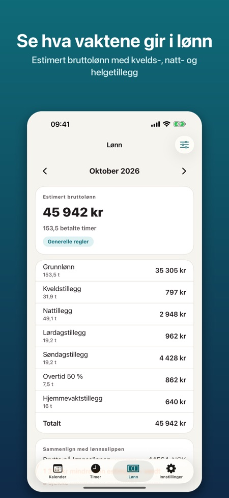
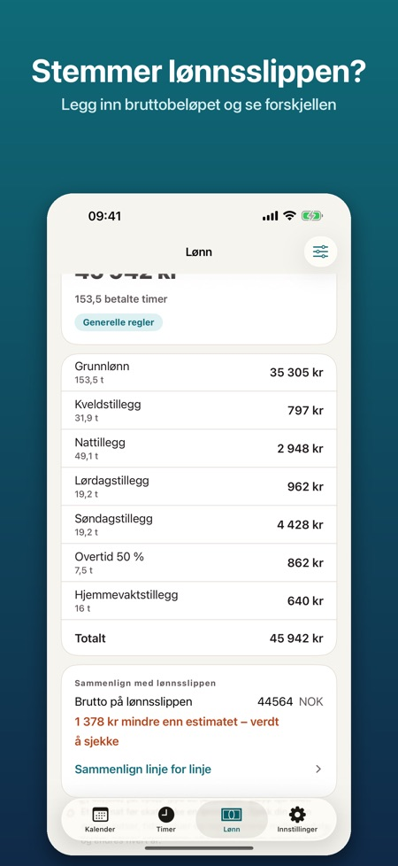
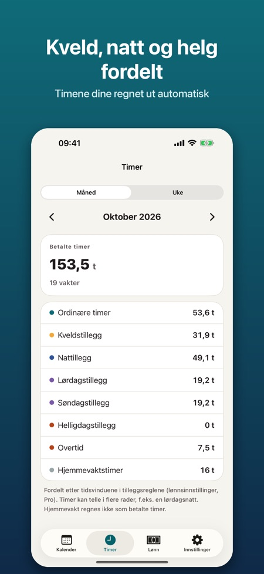

Vakter, tillegg og timer. Legg inn turnusen på sekunder og se timene fordelt på kveld, natt, helg og helligdag. Med Pro: estimert bruttolønn med tillegg, så du kan sjekke lønnsslippen.



Vaktplan er laget for deg som jobber turnus: sykepleiere, helsefagarbeidere, politi, butikk, hotell og restaurant, lager og studenter med deltidsjobb. Planlegg vaktene, se timene dine og sjekk at lønnsslippen stemmer.
KALENDER OG TURNUS
• Egne vakttyper med farge, start- og sluttid og ubetalt pause (dag, kveld, natt, langvakt, hjemmevakt, fri)
• Måneds- og ukevisning: velg en vakt og trykk på dagene for å legge den inn
• Turnus på 1–8 uker, lagt inn opptil to år frem
• Kopier en uke, bytt vakter mellom to dager, legg til notater og overtid
• Helligdager i Norge, Danmark og Finland beregnes i appen (også påske, Kristi himmelfart og pinse)
• Påminnelse før vakten
TIMER
• Timer per uke og måned, fordelt på ordinære timer, kveld, natt, lørdag, søndag, helligdag, overtid og hjemmevakt
• Vakter over midnatt og overgang til sommertid/vintertid regnes riktig
VAKTPLAN PRO
• Estimert bruttolønn per måned med en oversikt du kan sammenligne med lønnsslippen
• Legg inn bruttobeløpet fra lønnsslippen og se forskjellen mot estimatet
• Timelønn eller månedslønn, og tillegg du selv setter opp: kr per time eller % av timelønn, med tidsvindu og ukedager
• Overtid 50 % og 100 %, per dag eller etter et antall timer per vakt
• Maler med navnene på tilleggene i vanlige avtaler (KS, Spekter, regioner og kommuner i Danmark, Sote og KVTES i Finland). Satsene er ikke lagt inn: du fyller inn tallene fra din egen avtale
• Eksport til Apple Kalender, som .ics-fil eller som bilde
• Widget med neste vakt og timer denne måneden
Pro finnes som årsabonnement eller som engangskjøp for alltid. Årsabonnementet fornyes automatisk til du sier det opp i Apple-ID-innstillingene, senest 24 timer før perioden er over.
Ingen konto, ingen reklame. Alt blir lagret på telefonen og virker uten internett.
Lønnen er et estimat før skatt, ikke en lønnsslipp. Appen er uavhengig og ikke tilknyttet noen arbeidsgiver, fagforening, arbeidsgiverorganisasjon eller myndighet.